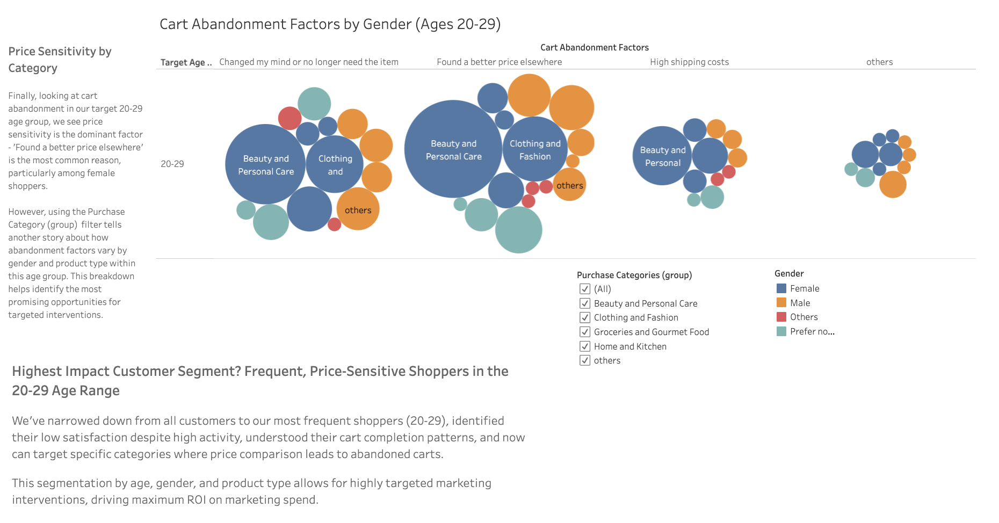

High-Impact Customer Segments by Purchase Frequency
This stacked bar chart identifies high-impact customer segments for Amazon based on purchase frequency. The 20-29 age group has the highest percentage of shoppers making purchases multiple times per week, representing a key frequent buying segment to focus on for improving satisfaction and consistency.
Shopping Satisfaction by Age Group
This line graph plots shopping satisfaction by age, showing a downward satisfaction gap that rebounds after age 60. The 20-29 group has the lowest satisfaction, warranting investigation. The dip around 35-39 aligns with this group being frequent browsers but inconsistent purchasers. Focusing on 20-29 year olds could help close their satisfaction gap.
Purchase Frequency vs Cart Completion Patterns
This heat map shows purchase frequency vs cart completion patterns by age group. Shoppers in their 20s show some of the lowest satisfaction levels, with most completed purchases being inconsistent with frequent browsing. Ages 35-39 are frequent visitors but inconsistent purchasers. There is opportunity to better target 20-29 year olds as frequent but inconsistent shoppers.
Cart Abandonment Factors (Ages 20-29)
This bubble chart segments abandonment factors for consumers aged 20-29 shopping for clothing and fashion. The most common reasons for cart abandonment in this demographic are finding a better price elsewhere, changing their mind or no longer needing the item, high shipping costs, and other beauty/personal care products.